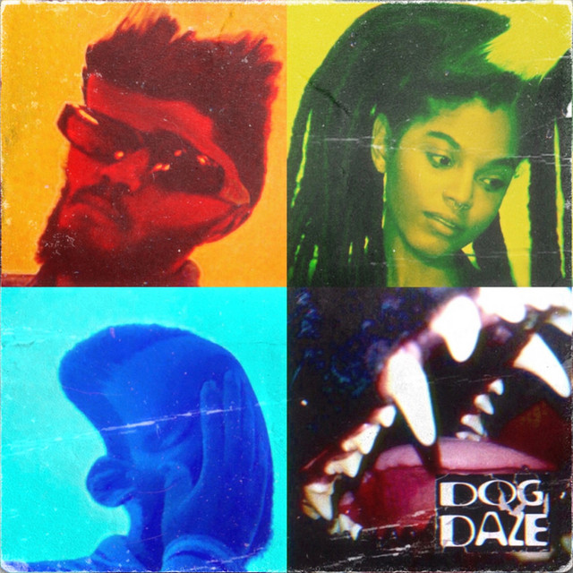
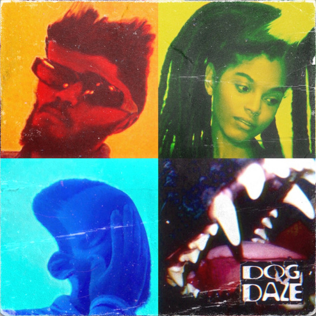
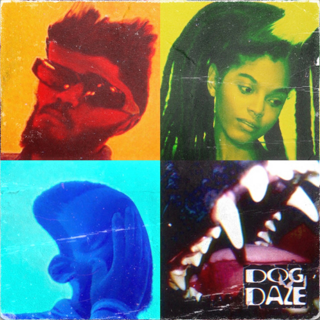
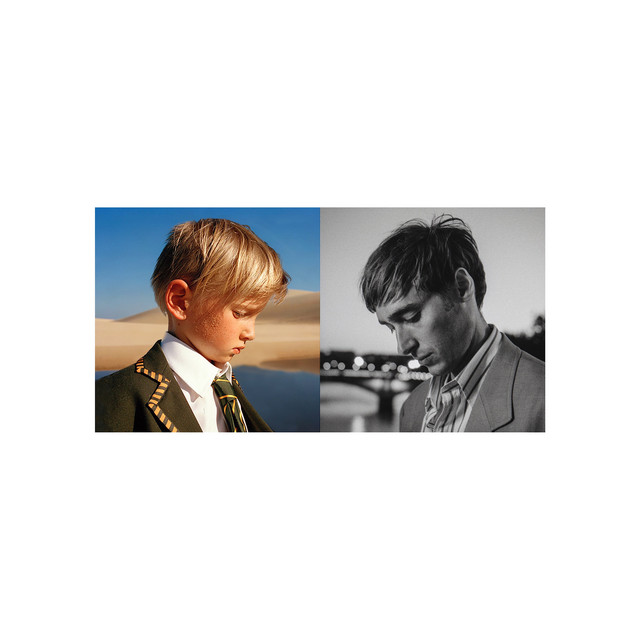
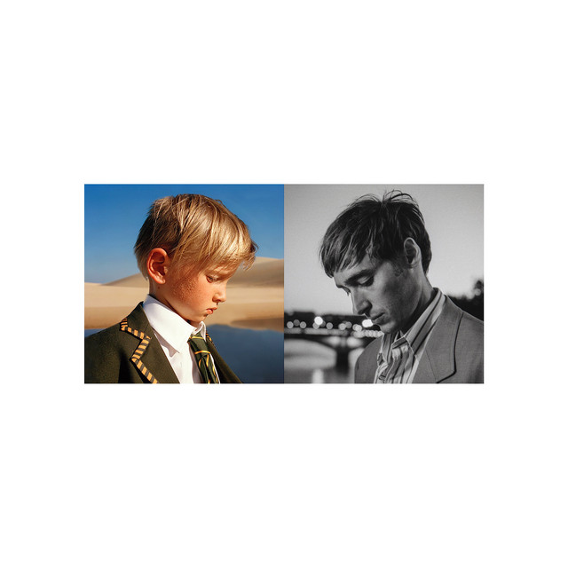

the story starts on a fateful day in math class in 2019. my friend at the time, while working on a question, played 'the less i know the better' and i got hooked.
i've always wanted to play the guitar, for as long as i could remember, but after tame impala became my 2nd loved artist in 2021, i knew that i wanted to learn the bass ...
i am obessed with the bass of the bass, i love how deep and mysterious it is and how it just adds to the the overall instrumentals of the guitar. i am also in love with how the bass sounds by itself and it can be independent of the guitar.
well thats the bit of history behind the bass, i think i just want it to be something i can use to destress to maybe perform at Open Mic nights and just have fun, im not trying to be a complete professional but if i could get to a solid level of being able to perform any song on the bass that would be amazing

 
